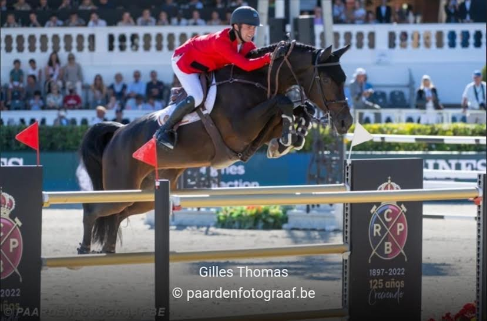

News · Nations Cup, Barcelona
Nations Cup, Barcelona
Calleryama wins the Nations Cup of Barcelona

Calleryama (Casall x Contender x Corrado) won the Nations Cup of Barcelona with Gilles Thomas.
A great mare with an amazing family, and the dam of our own Unguessable Von Axe.
Tell us the horse you have in mind.
A foal on the ground, a cross still to be made, or a mare to breed from. Say what you are after and we will tell you plainly what we have.